效果
| 名称 | 图标 | 说明 |
|---|---|---|
| 增幅 | 电弧分支职业的固有增益。6 秒内用电弧击杀把计数推满即可获得，装备星相「飞升」也能触发。 计数进度：红血 25% ｜ 橙血 50% ｜ 黄血 100% ｜ 守护者 50%。 增幅期间 +50 敏捷，滑铲距离提高到 8.5 米，+40 操控性，操控动作时长 ×0.95，持续 15 秒。激活期间战斗人员对穿戴者的瞄准精度下降，穿戴者获得 15% 战斗人员伤害抗性。 增幅状态下冲刺 2.5 秒进入速度助推器：移动速度拉满，滑铲距离提高到 11 米，跳跃高度提高 25%，并获得 15% 战斗人员伤害抗性。停止冲刺后再停留 2 秒，即使增幅已经耗尽。 用速度助推器滑铲一次，基础滑铲距离从 6.5 米永久提高到 8.5 米，直到死亡为止。 | |
| 电光充能 | 电光充能生效期间，每在 5 秒内攒够规定次数的武器伤害实例，下一次任意来源的伤害实例就提供 1 层。切换武器会重置计数，同一时刻的多个伤害实例最多只给 1 层。 攒够一层所需的伤害实例数：弹匣容量的 15% 向下取整 + 1；刀剑与榴弹发射器 2 次；三发装狙击枪 1 次。 每获得一层提供 2.5% 近战技能能量，攒到放电所需的 10 层合计 25%。超过 10 层照样按层数结算——9 层时一次获得 4 层，仍然给 10% 近战能量。 攒满 10 层后，取得技能命中或造成非充能近战伤害 0.5 秒后触发放电：在被伤害的敌人上方落下一发电弧矢弹，最多 405 矢弹溅射 + 270 地面溅射 = 合计 675 [36 + 30] 电弧伤害，范围 ? 米。不计为技能伤害，只算普通电弧伤害。 可以触发放电：不稳定爆炸 ｜ 冻结碎裂（黄血的自动碎裂不算）｜ 缠结爆炸 ｜ 线虫 ｜ 瓦解线 ｜ 黄血身上的悬停急拽 ｜ 先驱者的巨岩。 不触发放电：震颤的连锁闪电 ｜ 非技能来源的灼烧与点燃 ｜ 非技能来源的水晶碎裂 ｜ 天赋信念的爆炸物。 | |
| 离子轨迹 | 电弧元素拾取物，以 6 米/秒的速度追踪使用者。 拾取提供 11.25% 手雷与近战技能能量，以及 13.5% 职业技能能量。 使用者生成的离子轨迹对盟友不生效。 | |
| 致盲 | 被致盲的战斗人员陷入迷失，10 秒内无法攻击或使用技能。 被致盲的守护者 HUD 消失、屏幕变白、声音失真，持续 3 秒。 不屈勇士被致盲时进入眩晕。 | |
| 震颤 | 震颤的敌人每受到 115 [45] 伤害就释放一次连锁闪电，对 12 米内的所有敌人造成 119 [51] 电弧伤害，持续 10 [5] 秒。 重新施加震颤可以刷新持续时间，施加震颤那一次命中的伤害也计入伤害阈值。两次连锁闪电之间有 0.8 秒冷却。 释放连锁闪电的守护者不吃自己的链击伤害，除非它打到了别的守护者。 过载勇士受到震颤伤害时进入眩晕。 |
碎片
| 碎片 | 图标 | 说明 | 属性变化 |
|---|---|---|---|
| 增幅 | 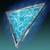 | 增幅期间 4 秒内连续取得 2 次击杀，生成一枚能量球，提供 2.5% 超能能量。 用电弧击杀触发增幅时，那一次击杀按 2 次计。 生成能量球后有 10 秒冷却，冷却期间的击杀不计数。 | — |
| 信标 | 增幅期间，用特殊弹药与威能弹药的电弧武器击杀会产生致盲爆炸，对 7.5 米内的敌人施加致盲。 | — | |
| 光辉 | 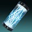 | 对被致盲的敌人取得精密击杀，触发致盲爆炸，对 7.5 米内的敌人施加致盲。 | +10 超能 |
| 放电 | 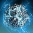 | 电弧武器击杀推进计数，满 100% 生成离子轨迹。 红血 34% ｜ 橙血 67% ｜ 黄血 100% ｜ 守护者 67%。 拾取离子轨迹提供 1 层电光充能。 | -10 近战 |
| 反馈 | 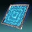 | 被近战攻击物理命中后，5 秒内下一次近战命中的伤害提高 100% [50%]；重击激活期间为 [15%]。 该增益不可刷新。 | +10 生命值 |
| 专注 | 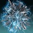 | 冲刺 1.25 秒后，保持冲刺且移动速度不低于 5 米/秒时，职业技能基础充能速度额外 +150%[75%]。 职业技能攒够 1 次充能即停止。 | -10 武器（猎人） -10 生命值（泰坦） -10 职业（术士） |
| 频率 | 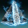 | 取得近战命中提供 +15 稳定性、+50 填装速度、换弹时长 ×0.8，持续 5.25 秒。 增幅期间，几乎所有电光充能来源都额外多给 1 层。 游戏内提示称本碎片会提高碎片自身的效果，实测并非如此——至少填装速度加成不受影响。 | — |
| 急速 | 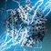 | 冲刺 1.25 秒后，保持冲刺且移动速度不低于 5 米/秒时，提供 +50 生命值属性。 | — |
| 直觉 | 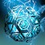 | 处于关键生命值时受到伤害，释放一阵电弧能量，最多造成 46 [20] 伤害，并对 ? 米内的敌人施加震颤。 两次激活之间有 15? 秒冷却。 | — |
| 离子 | 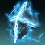 | 击杀震颤的敌人，或取得电光充能击杀，生成离子轨迹。 两次生成之间有 10 秒冷却。 | — |
| 量级 | 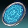 | 闪电手雷多发一道闪电，最多 5 发矢弹。 脉冲手雷多释放 2 次脉冲，最多 8 次。 风暴手雷多召唤一轮弹幕。 星相「暴雷之触」强化过的风暴手雷，其漫游风暴持续时间延长 1.5 秒。 | — |
| 动量 | 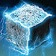 | 滑铲经过弹药砖块、且对应类型未满时，补满已装备的武器并提供 3 层电光充能。 | — |
| 充能 | 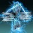 | 降到关键生命值时，手雷与近战技能基础充能速度额外 +400%[200%]，持续到护盾完全恢复为止。 | — |
| 抗性 | 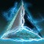 | 15 米内有至少 3 名敌人时获得 25%[10%] 伤害抗性，条件不再满足后再停留 2 秒。 | +10 近战 |
| 震颤 | 电弧手雷命中时施加震颤。 电弧之魂与离子哨兵再次施加震颤前有 4 秒冷却。 | -10 手雷 | |
| 伏特 | 终结技提供增幅与 1 层电光充能。 | +10 职业 |
手雷技能
| 手雷 | 图标 | 说明 | 基础冷却 |
|---|---|---|---|
| 电光手雷 | 重型弹道 ｜ 扫描 接触时扫描并瞄准 12 米视线内最近的敌人，1 秒后向它释放电弧闪电。 造成伤害后，闪电会连锁到 10 米内尚未被命中的最近敌人，重复到最多伤害 4 名敌人为止。 电弧闪电造成 521 [85] 伤害。 | 基础冷却 151.5 秒 回复倍率 0.75× | |
| 闪光手雷 | 中型弹道 速度降到足够低后爆炸，爆炸前有短暂延迟。 爆炸最多造成 684 [120] 伤害，7.5 米半径内衰减至 0%，并对 10 米内的敌人施加致盲，最长 5 [3] 秒。使用者不会被自己致盲。 暴雷之触：接触时额外爆炸一次，最多造成 684 [?] 伤害，范围 7.5 米，并对 5 米内的敌人施加致盲。 | 基础冷却 131.7 秒 回复倍率 0.875× | |
| 粘性电浆手雷 | 近乎直线弹道 ｜ 轻微追踪 ｜ 粘附 附着到敌人或表面上，1.7 秒后爆炸，最多造成 901 [150] 伤害，引爆点 6 米半径内衰减至 0%。 粘在敌人身上时爆炸伤害提高 66.7%，达到 1500 [250]。 | 基础冷却 105.4 秒 回复倍率 0.875× | |
| 闪电手雷 | 中型弹道 ｜ 壁挂 附着到表面和敌人身上，投射激光 1 秒后开始触发，此后每 1.67 秒发射一道闪电，最多 4 道。 每道闪电造成 373 [120] 伤害，合计最多 1492 [480]；装备碎片「量级」时最多 5 道，合计 1865 [600]。 暴雷之触：额外提供一次手雷技能充能。闪电第一次命中时施加震颤，并在造成伤害时提供 5 层电光充能，每道闪电最多触发一次。 | 基础冷却 219.5 秒 回复倍率 0.5× | |
| 脉冲手雷 | 中型弹道 接触时引爆，在 6 米半径内最多造成 156 [50] 伤害。 此后每 0.7 秒脉冲一次，每次在 6 米半径内最多造成 249 [80] 伤害，共 5 次；合计最多 1245 [530]。装备碎片「量级」时多脉冲 2 次，合计最多 1743 [690]。 暴雷之触：脉冲命中会生成离子轨迹，两次生成之间有 1 秒冷却，同时脉冲伤害逐次提高——第 1 次 +2% ｜ 第 2 次 +9% ｜ 第 3 次 +18.5% ｜ 第 4 次 +24% ｜ 第 5 次起 +25%。 | 基础冷却 175.6 秒 回复倍率 0.625× | |
| 弹跳手雷 | 中型弹道 ｜ 追踪器 接触时分裂成 4 枚追踪弹体。弹体追逐 6 米内的敌人，造成伤害后爆炸；若飞行速度过低，约 2 秒后自爆。 每枚弹体接触造成 2 次 24 [4] 伤害，随后爆炸最多造成 90 [15] 伤害。4 枚全部命中最多合计 552 [92] 伤害。 | 基础冷却 151.5 秒 回复倍率 0.75× | |
| 风暴手雷 | 中型弹道 接触时召唤一次聚焦打击，0.85 秒后命中，在 7 米半径内最多造成 440 [70] 伤害。 首次打击 0.6 秒后，在 7 米范围内呈 X 形召唤一轮矢弹弹幕，最多造成 311 [50] 伤害。装备碎片「量级」时再多一轮呈 + 形的弹幕，同样最多 311 [50] 伤害。 战斗人员每轮弹幕只会被伤害一次，合计最多 751 伤害，装备碎片「量级」时 1062 伤害。守护者每轮弹幕的每发矢弹也只受一次伤害，最多 120 伤害。 暴雷之触：引爆后生成一个漫游风暴，持续 4+1.5 秒，以 2 [1.5] 米/秒的初速追逐敌人，1.3 秒后提速到 4 [3] 米/秒。漫游风暴在自己下方发射闪电，造成 158 [30] 伤害，最多 11+4 次。 | 基础冷却 175.6 秒 回复倍率 0.625× |
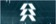
猎人| 类别 | 名称 | 图标 | 说明 | 基础冷却 | 碎片槽位 |
|---|---|---|---|---|---|
| 近战技能 | 组合打击 | 取得近战击杀时提供 100% 职业技能能量，恢复 100 生命值，并获得 1 层组合打击，持续 20 秒，最多 3 层。 组合打击激活期间，基础近战攻击计为电弧灌注的近战伤害。赌徒闪身要全额返还需要 70 职业属性。 1 层 ｜ 近战伤害 +133%[23%]，近战击杀恢复 80 生命值。 2 层 ｜ 近战伤害 +266%[51.3%]，近战击杀恢复 60 生命值。 3 层 ｜ 近战伤害 +400%[86%]，近战击杀恢复 40 生命值。 | 基础冷却 58.1 秒 回复倍率 1× | ||
| 近战技能 | 迷失一击 | 造成 162 [?] 接触伤害，以及最多 976 [?] 溅射伤害，7 米内衰减至 ?%。 命中时对 9.6 米内的敌人施加致盲，持续 8.5 秒，并提供增幅与 2 层电光充能。 | 基础冷却 118.8 秒 回复倍率 0.9× | ||
| 超能技能 | 电弧法杖 | 伤害抗性 90%[53%]。基础持续 20 秒，或每秒消耗 5% 超能能量。击杀提供 1 层电光充能。 空中与扎根光能攻击 ｜ 消耗 2.5% 超能能量。命中对 8 米内的目标造成 864 [?] 伤害，扎根攻击最多连锁命中 3 次。 扎根重击 ｜ 消耗 8% 超能能量。在约 45°、最远 8 米的扇形范围内造成 1264 [?] 伤害。 空中重击 ｜ 消耗 8%? 超能能量。造成 1264 [?] 伤害，并对 7 米范围内的敌人施加致盲。 掌击 ｜ 光能-光能-重击连招。在约 45°、最远 8 米的扇形范围内造成 2950 [?] 伤害并施加致盲。 格挡 ｜ 每秒额外消耗 ?% 超能能量。完全格挡并反射 180°? 范围内的所有攻击，每反射一次提供 1 层电光充能。被反射的投射物重新导向准星，对战斗人员造成 100% 提高的伤害。 职业技能 ｜ 不消耗超能能量，进行一次闪避闪身，期间提供 ?% [?%] 伤害抗性。装备星相「飞升」时可以反复使用飞升，代价是 ?% 超能能量。 | T2 级超能 基础冷却 556 秒 | ||
| 超能技能 | 风起云涌 | 伤害抗性 90%[49%]。 向前掷出一根电弧法杖，接触时爆炸并嵌入所命中的物体。接触造成 544 [300] 伤害并施加震颤，爆炸在 10 米半径内最多造成 608 [?] 伤害。 2 秒后，法杖被闪电击中，在 10 米半径内最多造成 1350 [500] 伤害。 再过 1.2 秒，法杖发出伤害场域，在 10 米半径内每 0.7 秒造成 446 [60] 伤害，持续 8 秒。 | T3 级超能 基础冷却 500 秒 | ||
| 超能技能 | 风暴边缘 | 伤害抗性 90%[45%]。基础持续 ? 秒，或每秒消耗 ?% 超能能量。 掷出一把追踪飞刀，造成 90 [?] 接触伤害，并对接触点 3 米内的敌人造成最多 171 [45?] 径向伤害，随后传送到该位置。 传送后进行一次大范围回旋打击，对 6 米内的敌人造成 1440 × 2 [300?] 伤害。 每投掷一把飞刀消耗 ?% 超能能量，每次超能激活最多 3 次。 | T1 级超能 基础冷却 625 秒 | ||
| 星相 | 飞升 | 在空中且拥有职业技能充能时，按［空中移动］消耗一次职业技能充能，进行一次向上的电弧法杖旋转，并触发已装备职业技能的使用效果。 为使用者与 10 米内的盟友提供增幅，对 10 米内的敌人最多造成 181 [?] 伤害并施加震颤。 星相伤害随超过 100 的职业属性缩放，200 属性时最多 +65%[?%]。 | — | ||
| 星相 | 流动状态 | 击杀震颤的敌人提供增幅。 增幅期间，职业技能基础恢复速率额外 +200%，并获得 +50 填装速度、换弹时长 ×0.8。 闪身动画期间获得 66%[32%] 伤害抗性。 | — | ||
| 星相 | 致命电流 | 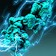 | 直接近战命中震颤的敌人时施加致盲。 使用职业技能后：近战突进距离提高到 7 米；10 秒内下一次近战或裂空打击命中会施加震颤，并触发一次伤害余震，对 6 米内的敌人造成 195 [?] 伤害。 | — | |
| 星相 | 裂空打击 | 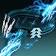 | 击杀震颤的敌人提供 1 层电光充能，不与「电介质」的 1 层叠加。 滑铲时按［近战技能］进行一次上勾拳，沿地面发射一道最远 22 米的电弧波形，造成 739 [125] 伤害并施加震颤。使用后对战斗人员提供 75% 伤害抗性，持续 4? 秒。开火状态下无法在滑铲期间使用。 可以触发「组合打击」的效果并吃到它的伤害提高，但不与「迷失一击」互动。 | — |
泰坦
| 类别 | 名称 | 图标 | 说明 | 基础冷却 | 碎片槽位 |
|---|---|---|---|---|---|
| 职业技能 | 推进器 | 以第一人称冲刺的形式进行闪避，期间移除战斗人员的弹体追踪?与对守护者的瞄准辅助。 朝当前保持的移动方向快速冲刺 8 米；不输入方向则向后冲刺 4 米。 | 基础冷却 52.1 秒 回复倍率 1× | ||
| 近战技能 | 弹道猛击 | 在空中冲刺 0.03 秒后触发：快速下降并打击地面，对 8 米内的敌人造成至少 210 [65] 的无衰减伤害。 每命中一名敌人提供 3% 超能能量与 3 层电光充能。 伤害随坠落时间缩放，从最大跳跃高度斜向猛击约造成 1000 伤害。落地后 0.9 秒内无法进行近战攻击。 | 基础冷却 164.6 秒 回复倍率 0.7× | ||
| 近战技能 | 地震打击 | 与其它肩撞类技能共用规则：需要冲刺 1.25 秒；未命中敌人时消耗 15% 近战技能能量；开火状态下无法在滑铲期间使用；被肩撞直接命中的守护者近战突进失效 0.5 秒。 向前突进 6.8 米，自动瞄准射程内的敌人。 命中敌人造成 1073 [110] 接触伤害，并对 6 米内的敌人造成 391 [40] 径向伤害、施加致盲持续 8 [1.6] 秒。 增幅期间，致盲半径提高到 10 米，持续时间提高到 10 [3] 秒。 | 基础冷却 131.7 秒 回复倍率 0.8× | ||
| 近战技能 | 雷霆一击 | 可蓄力的近战攻击。在 7.5 米宽、最远 16 米的锥形范围内造成 703 [120] 伤害，蓄力 2 秒可逐渐把伤害提高到最多 +100%。 动画期间对战斗人员提供 80% 伤害抗性，使用后再持续 ? 秒。 | 基础冷却 131.7 秒 回复倍率 0.9× | ||
| 超能技能 | 浩劫之拳 | 伤害抗性 90%[58%]。基础持续 25 秒，或每秒消耗 4% 超能能量。 光能攻击 ｜ 消耗 6% 超能能量。命中造成 499 [?] 伤害并强力击退敌人；取得一次光能攻击后，下一次重击命中额外造成 4 段各 273 [?] 的伤害。 重击 ｜ 消耗 12% 超能能量。向下猛击，在 11 米半径内造成 1619 [?] 伤害并施加致盲。超能施放本身也会猛击，但不产生余震。 若使用者在动画中停留至少 1 秒，猛击额外造成 4 段各 273 [?] 的伤害，每段需要输入方向键。最多生成 4 道余震，每道最多造成 292 [?] 伤害。 | T2 级超能 基础冷却 556 秒 | ||
| 超能技能 | 雷霆冲击 | 伤害抗性 90%[25%]。基础持续最长 4.5 秒，或每秒消耗 22.2% 超能能量。 飞行途中贴得非常近的敌人受到 150 [?] 碰撞伤害。 与表面或敌人接触时引爆，造成 180 [?] 接触伤害，以及覆盖 10 米、最多 8260 [?] 的爆炸伤害。 接触 0.75 秒后爆炸释放余震，每秒最多造成 108 [?] 伤害，持续 4 秒。 | T2 级超能 基础冷却 556 秒 | ||
| 星相 | 无畏护甲 | 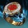 | 冲刺、移动速度高于约 4 米/秒且职业技能能量已满时，提供一面 50 生命值的正面覆盖护盾吸收伤害，每格挡一次攻击提供 1 层电光充能。 增幅期间覆盖护盾获得 33% 伤害抗性，有效生命值提高到 75。激活期间另有 60%[10%] 溅射伤害抗性与 10% 战斗人员伤害抗性。 覆盖护盾在被摧毁前能完整吸收最后一次命中，代价是耗尽全部职业技能能量。可以与其它覆盖护盾叠加。 | — | |
| 星相 | 重击 | 取得近战击杀时，0.1 秒内快速恢复一段生命值、开始生命值恢复，并提供增幅。 红血 50 ｜ 橙血 75 ｜ 黄血 100 ｜ 守护者 30 生命值。 打破敌人护盾，或对生命值低于 30% 的敌人造成伤害，提供重击持续 6 秒。 重击期间：基础与偃月近战伤害 +160%[30%]，充能近战伤害 +160%[20%]，基础近战攻击计为电弧充能近战命中，对战斗人员的近战突进距离提高到 6 米。 | — | ||
| 星相 | 风暴要塞 | 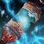 | 使用职业技能提供 4 层电光充能，用推进器则提供 6 层。 位于屏障后方时，每 0.6 秒提供 1 层电光充能，并且电光充能此时可以由武器伤害触发。 碎片「频率」不会提高本星相给出的层数，多面屏障也不叠加。 | — | |
| 星相 | 暴雷之触 | 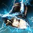 | 强化闪光、闪电、脉冲、风暴四种手雷，逐条效果见「手雷技能」一节。 | — |
术士
| 类别 | 名称 | 图标 | 说明 | 基础冷却 | 碎片槽位 |
|---|---|---|---|---|---|
| 近战技能 | 球形闪电 | 向前发射一颗最远 35 米的球形闪电。飞到最远距离、接触物体，或下方 4? 米内出现敌人时，释放一次闪电打击。 闪电打击在 2? 米内造成 271 [70] 伤害，直接命中敌人额外造成 117 [30] 伤害。 增幅期间额外生成 2 道闪电打击，每道造成 163 [?] 伤害。3 道全部直接命中时最多合计 714 [240] 伤害。 | 基础冷却 164.6 秒 回复倍率 0.7× | ||
| 近战技能 | 连锁闪电 | 突进距离延长到 6 米的近战攻击，电弧分支职业专属地拥有 2 次技能充能。 直接打击敌人造成 490? [100] 伤害，施加震颤，并使其释放连锁闪电。连锁闪电对 9 米内的敌人造成 266? [54] 伤害，最多连锁 5 次，但无法连回最近一次瞄准的敌人。 增幅期间释放两轮连锁闪电，各自瞄准不同的敌人，命中敌人的上限翻倍；同一名敌人仍然只会被连锁闪电命中一次。 | 基础冷却 131.7 秒 回复倍率 0.9× | ||
| 超能技能 | 混沌之触 | 伤害抗性 90%[55%]。基础持续 4 秒，或每秒消耗 25% 超能能量。期间移动速度 4.5 米/秒。 向准星方向持续发射长射程光线，每 0.13 秒造成 378 [?] 伤害，动画前 0.67 秒不造成伤害。 对同一名敌人命中 7 次会在其位置召唤一次震颤闪电打击，造成 202 [?] 伤害。 提前停用会部分返还超能能量，立即取消最多返还 30%。 | T4 级超能 基础冷却 455 秒 | ||
| 超能技能 | 雷霆万钧 | 伤害抗性 90%[58%]。基础持续 16 秒，或每秒消耗 6.25% 超能能量。 超能施放时在 6 米半径内最多造成 690 [?] 伤害并击退敌人，同时在铸造者周围释放 5 枚闪电追踪弹。追踪弹造成 440 [150] 伤害并施加震颤，持续 16 秒。 光能攻击 ｜ 消耗 ?% 超能能量。瞄准 12 米内的敌人释放锁链闪电，每 0.34 秒造成 178 [90] 伤害。伤害随时间攀升，每 0.33 秒提高 5%，3.33 秒后达到最高 +65%；停止造成伤害 2 秒后提升开始衰减。 重击 ｜ 冲刺时进行风驰电掣，消耗 6.25% 超能能量，朝当前输入方向传送最多 7 米。 | T2 级超能 基础冷却 556 秒 | ||
| 星相 | 电弧之魂 | 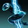 | 使用者生成的裂痕会为自己与穿过它的盟友提供电弧之魂，重新踏入裂痕可以刷新持续时间。 电弧伙伴持续 15 秒，以 100 发/分钟的速率向 24 米内的敌人进行 3 连发追踪弹体，每发造成 69 [11] 电弧手雷伤害，可以触发手雷技能的交互效果。 身边 15? 米内有盟友时提供额外的职业技能基础充能速度：1 名 +40%[20%] ｜ 2 名 +80%[40%] ｜ 3 名 +120%[60%]。 增幅期间改为 5 发连射，整体射速提高到 225 发/分钟。 | — | |
| 星相 | 电荷思维 | 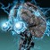 | 电弧技能击杀，以及击杀受电弧元素减益影响的敌人，生成离子轨迹，两次生成之间有 1? 秒冷却。 拾取离子轨迹提供增幅。 | — | |
| 星相 | 离子哨兵 | 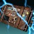 | 电弧击杀与动能击杀为离子哨兵蓄力，攒够 6 次充能即可使用。武器击杀 1 [2] ｜ 技能击杀 2 [?]。 手雷技能被替换为离子哨兵，它计为电弧手雷技能伤害，会触发手雷技能的交互效果。 离子哨兵落地时对 5 米内的敌人施加致盲，持续 10? [3?] 秒，此后每秒自动向 16 米内的敌人发射连锁闪电，造成 202 [50] 电弧伤害，闪电会连锁到最初命中目标 6 米内的另一名敌人。命中提供 1 层电光充能。 它持续 15 秒，拥有 ? 点构造体生命值。使用者不会被自己致盲。激活后有 6 秒冷却，冷却期间的击杀不提供充能。 | — | |
| 星相 | 闪电激涌 | 滑铲时按［近战技能］把使用者向前传送 10 米，在距出口点 7 米处呈五边形召唤 5 道闪电，每命中一名敌人提供 1 层电光充能；使用时另提供增幅。未取得命中时不会拿到超过 1 层。 使用后对战斗人员提供 ?% 伤害抗性，持续 ? 秒。开火状态下无法在滑铲期间使用。 闪电同时造成 634 + 127 = 761 [105 + 47 = 152] 伤害并施加震颤。 | — |